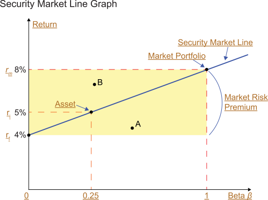

The key message of the CAPM is that there is a direct relationship between risk and return. The implication for purposes of asset allocation is to emphasize the importance of first determining the risk tolerance of the investor, then identifying a portfolio that efficiently achieves a fair return for that given level of risk. Investors should not expect to “beat the market” unless they intend to have a portfolio that is riskier than the market as a whole.
The message and implications for the CAPM becomes more easily understood through a graph.
Click each term on the graph for an explanation, paying particular attention to the Security Market Line.
